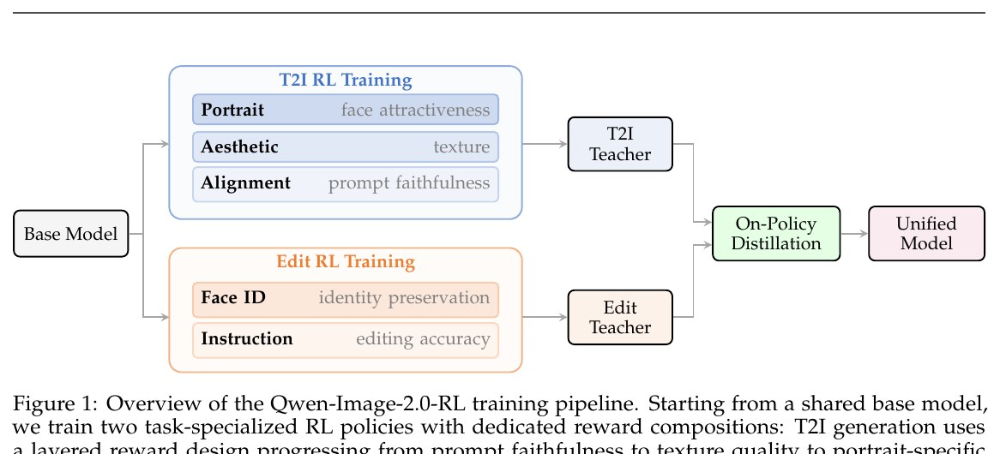
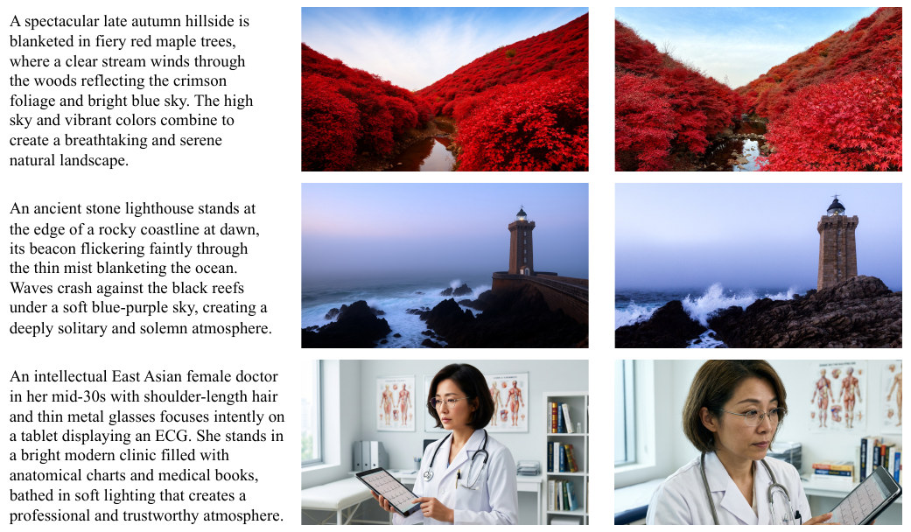
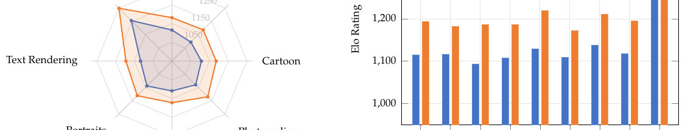
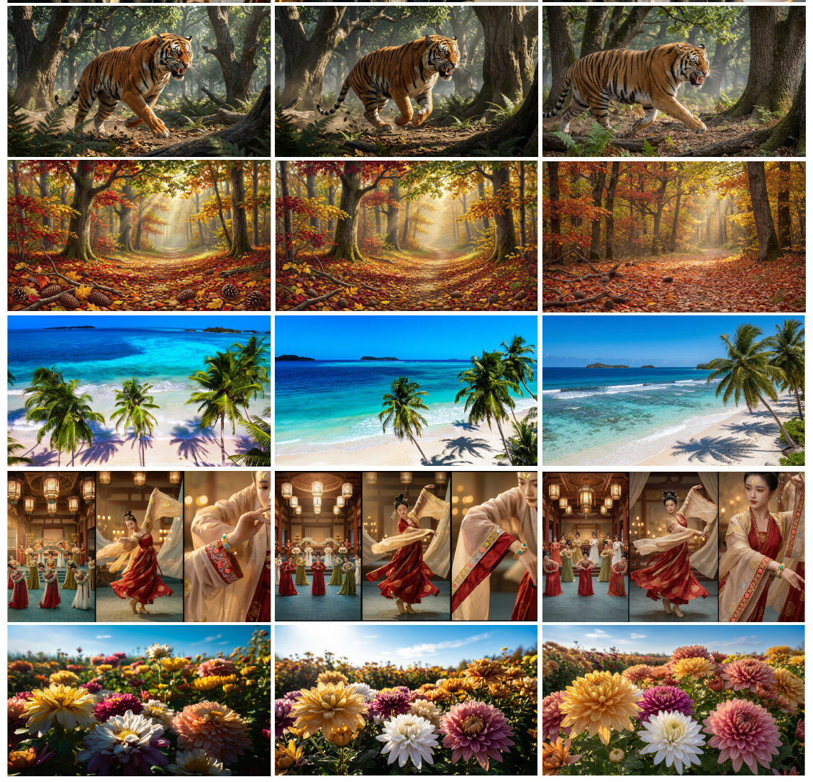
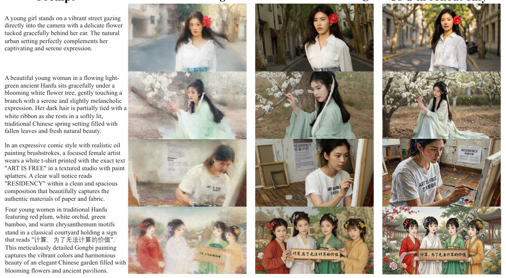
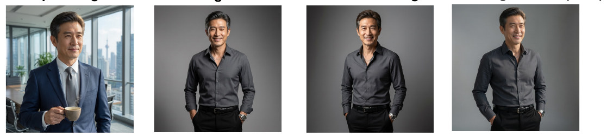

速览
五条要点
奖励模型用 pointwise，不用 pairwise
同一图池、同一评价维度（美学 + 质感）下各训一个奖励模型去做 RL，pointwise 版出图质感更好、伪影更少§3.1 · 图 2。打分 = VLM 在 {1,…,5} 上的概率期望式 12。
按任务拆奖励：T2I 分层，编辑加人脸 ID
T2I：对齐 → 美学 → 人像，层层加码§3.2。编辑：VLM 指令遵循（拆核心 / 非核心要求）+ 基于 embedding 的人脸身份分§3.3。
混合 CFG：rollout 用，优化不用
两端都用 CFG → 训练崩、图像塌掉；都不用 → 奖励涨但丢风格化和世界知识（认不出名人）；只在 rollout 用 → 稳定且保留预训练能力§4.1 · 图 3。
多教师 OPD 合并 T2I 与编辑
学生（从 Base 初始化）在自己的轨迹上逐步匹配对应任务教师的速度，教师带 CFG、学生不带；定性上优于把两类奖励混在一起训的 Mix-RL§4.3 · 图 5–6。
证据几乎全是定性的
定量结果只有表 1 和两个 Elo。pointwise vs pairwise、CFG 三选一、时间步子集、prompt 筛选、OPD vs Mix-RL 全部只有样例图或描述，没有数字消融；编辑侧没有自动化基准§3–§5。
架构与流程：不动网络，只动后训练
模型结构完全沿用 Qwen-Image-2.0（Zhao et al., 2026），本文没有复述也没有修改结构；「架构」在这里指后训练流水线。

相对基座（Qwen-Image-2.0）改了什么 §1
- 网络结构：不变
- 新增：5 个任务专用奖励模型（4 个 VLM 打分器 + 1 个人脸 ID 模型）§3
- 新增：两条任务专用 GRPO 训练 + 一步多教师 OPD§4
- 交付形态：一个同时做 T2I 与编辑的模型，部署时不再依赖奖励模型§1 · §7
和基座报告里的 RLHF 比 对照阅读 · Qwen-Image-2.0 报告 §4.2
Qwen-Image-2.0 报告里已经提到 GRPO + 「rollout 用 CFG、目标不含无条件分支」。本文的增量是：把奖励训练范式讲清（pointwise）、给出 CFG 三选一的定性对比、加入 prompt 筛选与按类别权重，以及用 OPD 把两个任务策略合并。
数据：奖励标注与 RL prompt 池
本文不涉及预训练数据。这里的「数据」只有两类：训练奖励模型用的人工标注，以及 RL 用的 prompt 池。两者都没有给任何条数。
4.1 奖励标注的两种格式（对照实验）
为了只比较训练范式，两套标注评价维度相同（美学质量 + 视觉质感），图片来自同一个 SOTA AIGC 模型池，只差标注格式§3.1。
Pointwise（最终采用） 默认
- prompt：从高质量人像参考图中随机采样，再改写以让语言模式超出训练分布§3.1
- 每张图独立打 5 分 Likert，两个结构化维度：
- Quality：清晰度、光照、色彩平衡、风格一致、材质质感
- Fidelity：结构正确、物理一致、无 AI 伪影（不自然的磨皮、纹理重复）
- 损失：对分数做平方回归式 11
Pairwise（对照组） 对照
- 同一 prompt 的两张图并排做偏好判断§3.1
- 严格优先级：图文一致 > 结构畸变 > 纹理质量 > 美感
- 高质量模型通常前两项都过关，于是比较退化为质感 + 美感
- 附加属性标签：样本是否有效、是否有文字畸变、是否有人体畸变
- 损失：Bradley-Terry 排序式 10

4.2 五个奖励的打分标准
T2I · 分层：先管对不对，再管好不好看，最后专管人像 §3.2
① 图文对齐 最基础
只看语义对应，不看美感；遗漏、误读、违背要求都要罚。优先级：物体存在与数量 → 属性（颜色 / 大小 / 形状 / 材质）→ 空间关系 → 动作与姿态。最高优先级不过关，其他再好也封顶低分。
② 美学 质感
构图平衡、真实光照、纹理保真、整体艺术一致性。训练数据就是 4.1 的 pointwise 标注集。
③ 人像 人脸 / 皮肤 / 头发
面部比例、保身份的面部细节、皮肤与头发质感；显式检查手指数、五官畸变、身体比例。用单独的人像数据集训练，prompt 同样采自高质量人像参考图；rubric 聚焦面部吸引力与皮肤头发真实感。
编辑 · 「改对了」+「人没换」 §3.3
④ 指令遵循（VLM）
输入三元组：源图 + 编辑指令 + 输出图。先让 VLM 把指令拆成核心编辑要求与非核心辅助要求，再按 rubric 判：(1) 核心指令是否完成；(2) 非核心要求是否满足；(3) 整体是否视觉连贯。覆盖物体替换、属性修改、风格迁移等。
⑤ 人脸身份一致性（模型打分）
作者发现 VLM 的视觉一致性判断抓不住细微的人脸身份漂移，于是加一个基于人脸模型的 embedding 级身份分，补 VLM 的语义层判断。具体用哪个人脸模型、相似度怎么映射成奖励，原文未写。
所有 VLM 奖励都是微调「Qwen series VLM」并开启 CoT 推理§1 · §3.2；具体型号、尺寸、标注条数、标注员数量原文均未给。
4.3 RL prompt 池：先筛、再分类、再配权重
候选 prompt 池
- 规模
- 未披露
- 来源
- 未披露
Base 模型 G 次 rollout
- 打分
- 复合奖励
- G
- 未披露
组内极差过滤
- 指标
- max − min
- 规则
- > 预设阈值才保留
- 阈值
- 未披露
按语义分类 + 权重
- 类别
- 人像 / 风景 / 文字排版 / 通用 等
- 权重值
- 未披露
筛选逻辑：全高或全低的 prompt 组内没有区分度，对策略优化信号弱；只留「策略还有改进空间」的 prompt§4.2。分类权重示例：人像 prompt 加大人像奖励权重，文字排版 prompt 加大对齐权重§4.2。原文 4.2 写在 T2I 语境里，编辑侧是否同样筛选、怎么分类没有说明。
4.4 已披露规模
| 项目 | 原文给了什么 | 来源 |
|---|---|---|
| Pointwise 美学标注集条数 | 原文未披露；只说 5 分 Likert、两维度 | §3.1 |
| Pairwise 对照集条数 | 原文未披露 | §3.1 |
| 人像奖励数据集 | 原文未披露；「单独的人像专用数据集」 | §3.2 |
| 对齐奖励、指令遵循奖励训练数据 | 原文未披露；连来源都没写 | §3.2–3.3 |
| 标注图片来源 | 「state-of-the-art AIGC models」组成的共同图池；具体模型未披露 | §3.1 |
| RL prompt 池大小 / 过滤留存率 | 原文未披露 | §4.2 |
| 各类别 prompt 占比与权重 | 原文未披露；只列了类别名 | §4.2 |
| OPD 用的 prompt / 编辑样本 | 原文未披露；只说按样本任务类型选教师 | §4.3 |
| 评测判官 Q-Judger 训练数据 | 130K+ 人工标注图文对，80 位专业艺术家标注（属于 Qwen-Image-Bench，不是本文训练数据） | §5 |
没有任何比例数字，所以本页不画配比条。
4.5 Caption / prompt 长什么样
本文没有 caption 管线。能看到的只有图 2、3 里的 RL 评测 prompt：英文长描述，含场景、光线、情绪，以及需要渲染的引号内文字（如 "ART IS FREE"、"RESIDENCY"，以及一句中文标语）图 2 · 图 3。编辑 prompt 示例见图 6：三联拼图、半身棚拍、角色设定图，均强调「保持主体特征」图 6。
训练配方
预训练、SFT 都在基座报告里；本文只覆盖奖励模型 → 双路 RL → OPD。
奖励模型训练
- 底座
- Qwen 系 VLM + CoT
- 目标
- pointwise 回归
- 输出
- {1..5} 期望
T2I RL
- 初始化
- Base
- 奖励
- 对齐 + 美学 + 人像
- 训练
- 全参数（§1 提及）
编辑 RL
- 初始化
- Base
- 奖励
- 指令遵循 + 人脸 ID
- 与 S1a
- 并行、独立
多教师 OPD
- 学生
- 从 Base 初始化
- 教师
- S1a + S1b，带 CFG
- 奖励模型
- 不再需要
「全参数」依据：§1 把「已有扩散 RL 框架主要在 LoRA 下验证，全参数大规模训练欠探索」列为要解决的挑战之一；正文没有再明说本文 RL 是否全参数。
5.1 RL 的四个关键选择
CFG 两端都用
✗ 训练不稳，最终塌成无意义图像
rollout 和策略优化都带 CFG§4.1 · 图 3 左。
两端都不用
✗ 奖励涨，但丢风格化与世界知识
认不出名人、不会特定风格；作者归因于基座依赖 CFG 才能充分表达预训练知识§4.1 · 图 3 中。
只在 rollout 用（采用）
✓ 稳定 + 保留预训练能力
rollout 用 CFG 出结构合理的候选，奖励更可靠；目标不含无条件分支，梯度稳定、算力更省§4.1 · 图 3 右。
时间步子集 §4.2
rollout 用 40 步 ODE。在全部 40 步上算 RL 目标会很快 reward hacking，几轮迭代就退化。改为只在一部分时间步上训练，偏重靠近 t = 1 的高噪声步（决定全局结构与语义布局）。具体选哪些步、多少步未披露。
多奖励优势 式 13
先对每个奖励在 prompt 组内单独归一化再加权，避免某个奖励因数值范围大而主导；思路参考 GDPO（Liu et al., 2026b）。
异步奖励 §4.1
奖励模型作为远程 API 部署。各 rank 生成并汇总图片后，后台线程异步提交；返回后所有 rank 同步取分、组内归一化、算优势。作者称几乎所有奖励延迟都被推理计算掩盖，加奖励模型不会成比例拉长训练时间（无实测数字）。
OPD 细节 §4.3
- 每个 batch 按样本任务类型选教师
- 同一时刻只有活跃教师在 GPU，其余卸载到 CPU
- 教师带 CFG 预测速度，学生不带
- 相比把 T2I 与编辑奖励一起训，作者称可避免跨任务优化冲突
背景公式：Flow-GRPO 与 DiffusionNFT§2.2 · 式 4–9
Flow-GRPO：把多步去噪当 MDP，用等价 SDE 采样让转移概率可算，组内归一化优势 A = (R − μc)/σc，配裁剪的重要性比率目标式 4–6。
DiffusionNFT：在前向加噪过程上做优化，构造正负速度 v+ = βvθ + (1−β)vold、v− = (1+β)vold − βvθ，按缩放后的优势 r ∈ [0,1] 加权，另加对参考策略的 KL 约束式 7–9。
本文正文只说「GRPO-based」，没写最终用的是哪种目标或二者如何结合。
OPD 目标的推导（附录 A）W2 上界
LLM 蒸馏常用前向 KL，但连续扩散模型的路径测度 KL 难算。作者改用 2-Wasserstein 距离：引用 Benton et al. (2023) 定理 1，在流存在唯一且光滑、教师速度场对 x Lipschitz 两个假设下，学生与教师输出分布的 W2 距离被「沿学生分布的速度误差积分」乘以 exp(∫Ltdt) 上界约束式 17。指数项与训练目标无关，所以最小化上界 ⇔ 最小化轨迹级速度匹配损失式 18，离散化即式 14 / 19。
相关工作对比：Flow-OPD、DiffusionOPD 也把 OPD 推到流匹配模型，但用的是高斯转移核的 KL，且只合并单奖励 T2I 教师；本文按任务类型分教师，并从 W2 上界推导§6。
| 超参 / 配置 | 原文 | 来源 |
|---|---|---|
| Rollout 采样步数 | 40 步 ODE | §4.2 |
| 奖励分数集合 | S = {1, 2, 3, 4, 5}，取期望 | 式 12 |
| 优势权重约束 | Σ wk = 1 | 式 13 |
| 组大小 G、学习率、训练步数、batch | 原文未披露 | — |
| 各奖励权重 wk、类别权重向量 | 原文未披露 | — |
| 训练用的时间步子集 | 原文未披露（只说偏高噪声） | §4.2 |
| CFG scale、SDE 噪声 σt、裁剪 ε、KL 系数 | 原文未披露 | — |
| OPD 离散步数 N、训练步数 | 原文未披露 | §4.3 |
| 算力 / GPU 数 / 时长 | 原文未披露 | — |
评测
两类定量：Qwen-Image-Bench（只测 T2I，模型判官打分）与两个人类偏好竞技场 Elo（T2I、编辑）。其余是定性对比。
Qwen-Image-Bench 是什么 §5 · 表 1
面向创作者的 T2I 基准（Li et al., 2026a），五个一级维度：Quality、Aesthetics、Alignment、Real-world Fidelity、Creative Generation；分数 0–100，由 56 个三级 facet 经三级分类树自下而上聚合。打分由 Q-Judger 完成，这是一个在 130K+ 人工标注图文对上训练的统一判官模型，标注者为 80 位专业艺术家。
纵轴从 40 起，柱高只反映相对差距。涨幅最大：Creative Gen. +6.72、Real-world Fidelity +4.29（与 §5 一致）；Aesthetics 只涨 1.57，是五项里最少的。
Qwen-Image-Bench Overall，19 个模型排序 表 1
横轴从 45 起。RL 后 57.84 排第 5，超过 Seedream 5.0（57.22），仍低于 Nano Banana Pro（59.45）、GPT Image 1.5（59.65）、Nano Banana 2.0（59.82）和 GPT Image 2（64.69）推算。Base 55.23 原本略低于 FLUX 2 Max（55.33）。
表 1 全表19 个模型 × 5 维度 + Overall
| 模型 | Quality | Aesthetics | Alignment | Real-world Fidelity | Creative Gen. | Overall |
|---|---|---|---|---|---|---|
| GLM Image | 49.26 | 50.64 | 47.90 | 44.69 | 45.23 | 48.19 |
| Kling Image 2.1 | 49.11 | 50.15 | 49.18 | 44.74 | 44.67 | 48.26 |
| Qwen Image | 48.44 | 52.25 | 50.72 | 43.16 | 47.30 | 49.23 |
| Imagen 4.0 | 50.16 | 52.68 | 51.64 | 44.84 | 47.94 | 50.29 |
| HunyuanImage 3.0 | 50.35 | 53.57 | 52.00 | 44.31 | 49.12 | 50.81 |
| Imagen 4.0 Ultra | 50.90 | 54.25 | 54.02 | 45.59 | 51.14 | 51.99 |
| Qwen Image 2512 | 51.76 | 54.74 | 52.72 | 47.00 | 50.19 | 52.06 |
| GPT Image 1 | 52.34 | 55.09 | 56.28 | 48.14 | 55.78 | 54.07 |
| FLUX 2 Pro | 52.30 | 56.94 | 57.01 | 47.29 | 56.18 | 54.57 |
| FLUX 2 Max | 53.64 | 56.85 | 57.35 | 49.35 | 56.50 | 55.33 |
| Seedream 4.0 | 54.01 | 58.81 | 56.64 | 51.05 | 58.15 | 56.21 |
| Seedream 4.5 | 54.41 | 58.72 | 57.31 | 51.69 | 60.64 | 56.78 |
| Seedream 5.0 | 52.55 | 58.40 | 58.90 | 51.92 | 65.29 | 57.22 |
| Nano Banana Pro | 55.67 | 60.26 | 61.25 | 54.07 | 66.23 | 59.45 |
| GPT Image 1.5 | 55.14 | 60.88 | 61.72 | 53.95 | 66.35 | 59.65 |
| Nano Banana 2.0 | 54.77 | 61.08 | 62.40 | 54.28 | 67.05 | 59.82 |
| GPT Image 2 | 58.65 | 67.53 | 65.85 | 57.38 | 75.23 | 64.69 |
| 本文 | ||||||
| Qwen-Image-2.0-Base | 52.29 | 57.10 | 57.64 | 47.54 | 58.22 | 55.23 |
| Qwen-Image-2.0-RL | 54.39 | 58.67 | 59.28 | 51.83 | 64.94 | 57.84 |
| RL − Base 推算 | +2.10 | +1.57 | +1.64 | +4.29 | +6.72 | +2.61 |
基线按 Overall 升序排列（原表做法）；圆点 = 该列最佳，均为 GPT Image 2。表中没有 * / † 等记号。表 1
人类偏好竞技场
Arena Elo：Base → RL §5
横轴从 1000 起。T2I 1115 → 1193（+78），编辑 1256 → 1349（+93）。T2I 分项里正文只点名两项：3D Modeling +93、Photorealism +91；其余分项数值正文没给，图 4 的本地裁图也读不全，本页不填。竞技场名称、投票数、对手池、置信区间原文均未给。

定性对比
| 对比 | 对象 | 论文结论 | 来源 |
|---|---|---|---|
| 奖励训练范式 | pairwise vs pointwise 奖励训出的 RL 模型 | pointwise 质感更好、伪影更少 | 图 2 |
| CFG 策略 | 两端都用 / 都不用 / 仅 rollout | 仅 rollout 最稳且保知识 | 图 3 |
| T2I 合并方式 | Base / Mix-RL / OPD | Mix-RL 已优于 Base；OPD 细节更锐、更贴 prompt、美感更好 | 图 5 |
| 人像编辑 | Base / Mix-RL / OPD | OPD 身份保持与指令遵循最好；Mix-RL 仍有身份漂移、复杂指令改不全 | 图 6 |

CFG 三策略、人像编辑对比原图论文图 3 · 图 6


新在哪
只列能在原文核对的点。异步奖励 API 属常规工程，多奖励逐项归一化借自 GDPO，均不计入。
多教师 OPD：按任务类型分教师，合并 T2I 与编辑
学生在自己的轨迹上匹配对应任务教师的速度，教师带 CFG、学生不带，不活跃教师卸载到 CPU；目标由 W2 上界推出§4.3 · 附录 A。与同期 Flow-OPD / DiffusionOPD 的区别：它们合并单奖励 T2I 教师§6。
可核对点：式 14、附录 A；对 Mix-RL 的优势只有图 5–6 定性。
受控对比 pointwise vs pairwise 奖励，并统一用 pointwise
同图池、同维度、只换标注格式，再看各自训出的 RL 结果§3.1 · 图 2。
可核对点：实验设计清楚；结果只有 3 组定性样例，没有奖励模型精度或 RL 后指标。
CFG 三选一的对照
把「rollout 用、目标不用」与两种对照放在一起，指出不用 CFG 会丢风格化与名人知识§4.1 · 图 3。基座报告已用了这个策略，本文补的是对比证据。
可核对点：图 3 定性；无训练曲线。
编辑奖励 = VLM 指令拆解 + embedding 人脸 ID
指令遵循奖励先把指令拆成核心 / 非核心要求再判；另加人脸 embedding 分专抓细微身份漂移§3.3。
可核对点：方法描述；奖励模型自身准确率没给。
用 Base 的组内奖励极差筛 RL prompt
每个 prompt 先让 Base 出 G 张图，max − min 低于阈值的丢掉；再按类别配奖励权重§4.2。
可核对点：流程描述；阈值、留存率、收益都没给。
对图像编辑数据、评测、caption 的启示
每条先写论文做法（带来源），再给一条迁移建议，不是论文内容。
C1把编辑指令拆成核心与非核心要求
论文：指令遵循奖励先让 VLM 把指令拆成核心编辑要求和非核心辅助要求，再分别判是否完成，最后看整体连贯§3.3。
迁移建议，不是论文内容：编辑数据的结构化 caption 直接存这两层：core_edits（必须发生的改动）和 aux_requirements（风格、光线等附带要求），评测 rubric 就按这两层逐条勾，训练和评测共用一套 schema。
C2对齐检查按优先级封顶
论文：对齐奖励按「物体存在与数量 → 属性 → 空间关系 → 动作姿态」排优先级，高优先级不过关就封顶低分§3.2。
迁移建议，不是论文内容：校验目标图 caption 与编辑结果时也用分级门控：先核对象与数量，再核属性和位置；前一级失败的样本直接剔除，不再算「部分正确」，减少脏对进训练集。
C3标注用 prompt 主动改写出分布
论文：pointwise 标注集的 prompt 从高质量人像参考图采样后再改写，用来让语言模式超出训练分布§3.1。
迁移建议，不是论文内容：编辑评测集与奖励标注集的指令不要直接复用训练 caption；同一个编辑意图改写成口语、短句、多约束几种说法，单独统计改写后的掉点。
D1用组内分数极差挑「有信号」的样本
论文：Base 对每个 prompt 出 G 张，复合奖励极差低于阈值就丢掉——全好或全差都没有优化信号§4.2。
迁移建议，不是论文内容：编辑 RL 或 DPO 选指令时同样跑 G 次看判分极差；评测集里极差始终为 0 的 case（谁都做对 / 谁都做不了）可以降权或单独成桶，免得稀释模型间差距。
D2按类别给奖励配不同权重
论文：prompt 分人像、风景、文字排版、通用等类，人像提高人像奖励权重，文字排版提高对齐权重§4.2。
迁移建议，不是论文内容：编辑数据按编辑类型打标签（人像改妆、换背景、文字替换……），每类配一组评测权重：人像类人脸 ID 权重高，文字类 OCR 准确率权重高；这些标签同时用来做分桶报告。
D3给样本挂辅助缺陷标签
论文：pairwise 标注除偏好外，还标「样本是否有效、是否有文字畸变、是否有人体畸变」§3.1。
迁移建议，不是论文内容：编辑对的质检表固定加这三列（再加「非编辑区是否被改」），既能做过滤规则，也能统计哪类缺陷最多，指导数据补充。
D4比较标注方案时控制图池
论文：pointwise 与 pairwise 两套标注用同一模型池的图、同一评价维度，只差格式§3.1。
迁移建议，不是论文内容：团队里比较两种 caption 格式或两种标注协议时，固定同一批编辑对，只换格式，否则结论会混进数据分布差异。
E1VLM 判分取概率期望而非 argmax
论文：奖励模型输出 {1..5} 的 token，分数取 Σ s·p(s)式 12；pointwise 用 Quality / Fidelity 两维 5 分 Likert§3.1。
迁移建议，不是论文内容：自建编辑判官时读出 1–5 各档的概率算期望，得到连续分，能区分「稳 4 分」和「3/5 摇摆」；同时把概率熵当作判官置信度，高熵样本送人工复核。
E2身份一致性别只靠 VLM
论文：作者发现 VLM 抓不住细微人脸身份漂移，加了 embedding 级人脸 ID 打分§3.3。
迁移建议，不是论文内容：人像编辑评测至少报两个独立分：VLM 指令完成度 + 人脸 embedding 相似度，不合成单一总分；ID 分出现大幅下降的样本优先人工看。
E3分层 facet 自下而上聚合
论文：Qwen-Image-Bench 由 56 个三级 facet 经三级分类树聚合到 5 个一级维度，判官在 130K+ 艺术家标注上训练表 1 · §5。
迁移建议，不是论文内容：编辑基准也建三级分类树（如 编辑类型 → 子操作 → 难点），分数逐级聚合，这样 RL 前后能看出涨在哪一层，而不只是一个总分。
E4判官与奖励模型要分家
论文：RL 奖励是 VLM 打分器，T2I 自动评测也用模型判官 Q-Judger；原文没讨论二者之间的相关性§3 · §5。
迁移建议，不是论文内容：编辑 RL 的离线评测用与奖励模型不同来源 / 不同训练数据的判官，并保留一份人工盲测（GSB）做交叉验证，防止 reward hacking 在自动分上被误读成进步。
局限与存疑
- 核心设计没有定量消融。pointwise vs pairwise、CFG 三选一、时间步子集、prompt 极差筛选、按类别权重、OPD vs Mix-RL，全部只有样例图或文字描述图 2 · 图 3 · 图 5–6。
- 编辑没有自动化基准。表 1 只测 T2I；编辑侧唯一定量是竞技场 Elo +93，且竞技场名称、投票数、对手池、置信区间均未给§5。
- 数据与超参全未披露。奖励标注条数、标注员、prompt 池大小、过滤阈值、G、学习率、步数、奖励权重、OPD 步数、算力都没有；奖励 VLM 只写「Qwen series VLM」§3 · §4。
- 奖励组成前后表述不一。§3.3 提到「VLM-based visual consistency reward」，结论也说 rubric 覆盖「visual consistency」，但图 1 和 §4.3 的编辑教师只列指令遵循 + 人脸 ID 两个奖励§3.3 · §4.3 · §7。
- RL 目标没说清。§2.2 同时介绍 Flow-GRPO 与 DiffusionNFT，正文只写「GRPO-based」，没交代最终用哪个目标或怎样组合。
- 「OPD 后把 CFG 整合进学生」没有解释。学生训练时不带 CFG，之后如何整合未说明§4.3。
- 竞技场分项只公开了两项。正文给了 3D Modeling +93、Photorealism +91；图 4 题注说「8 个子类」，雷达图的轴里含 Edit，与「T2I 分项」的叙述口径需对照原图确认§5 · 图 4。
- 自动评测由同组织的基准与判官给出。Qwen-Image-Bench / Q-Judger 来自 Li et al. (2026a)；表 1 的基线分数由该判官统一打分，原文未给人工复核或与奖励模型的相关性分析表 1。
- 开源与许可证未写。原文没有提权重、代码或许可证；奖励模型是否发布也未提。
- 日期口径。arXiv v1 为 2026-06-25，PDF 封面印 June 29, 2026；本页以 arXiv v1 为准。
图表索引
| 编号 | 内容 | 本页位置 |
|---|---|---|
| 首页图 | 本地裁图只截到正文第一页文字，无图像内容 | 未收录 |
| 图 1 | 训练流水线总览：双路 RL → OPD | 架构 |
| 图 2 | pairwise vs pointwise 奖励训出的 RL 结果 | 数据 4.1 |
| 图 3 | RL 中三种 CFG 策略 | 评测（折叠） · 训练 5.1 |
| 图 4 | 竞技场 Elo 雷达图 + 分组柱状图 | 评测 |
| 图 5 | T2I：Base / Mix-RL / OPD | 评测 |
| 图 6 | 人像编辑：Base / Mix-RL / OPD | 评测（折叠） |
| 表 1 | Qwen-Image-Bench 19 模型 × 5 维度 | 评测图 + 折叠全表 |
| 式 10–14 | BT 损失、pointwise 回归、期望打分、多奖励优势、OPD 损失 | 数据 · 训练 |
| 附录 A | OPD 的 W2 上界推导 | 训练（折叠） |